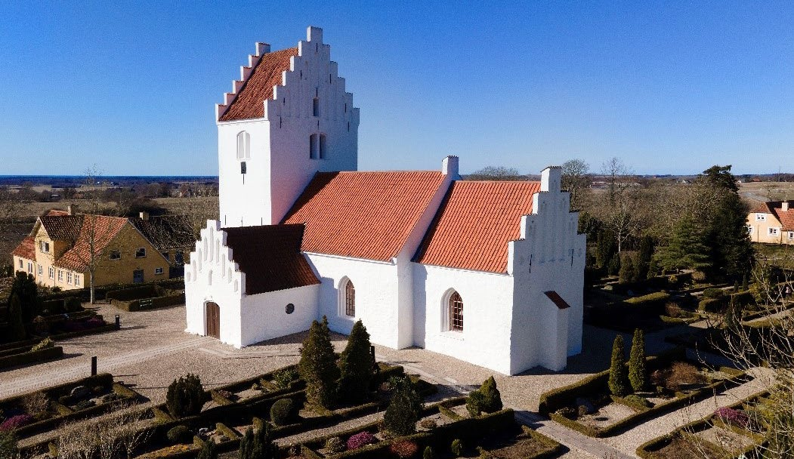

Fakta-ark 17: Religion
Áudio
sidde 92
Fakta-ark 17: Religion og kirke
Læremateriale Til Medborgerskabsprøven

sidde 93
I Danmark kan man selv vælge religion, og man har ret til at dyrke sin religion, så længe man respekterer nogle grundlæggende regler. Man kan også frit vælge at skifte religion. Og man kan vælge slet ikke at have en religion. Der er religions frihed i Danmark. Den blev stadfæstet med grundloven i 1849.
Læremateriale Til Medborgerskabsprøven Fakta-Ark 17: Religion Og Kirke
Der findes mange forskellige overbevisninger*. Nogle tror på noget guddomme ligt, og andre bygger deres livssyn på andre værdier. Uanset om man er religiøs eller ej, har man som borger i Danmark de samme rettigheder og pligter.
Dette kapitel handler om: • Den danske folkekirke • Andre trossamfund i Danmark
Den Danske Folkekirke
De fleste borgere i Danmark (ca. 70 procent i 2026) er medlem af folkekirken. Mange danskere bruger først og fremmest kirken i forbindelse med dåb*, konfir mation*, bryllup og begravelse. En del danskere går også i kirke juleaften den 24. december.Landsbykirke i Danmark.
Ifølge grundloven er den evangelisk-lutherske kirke den danske folkekirke. Folkekirken er dermed protestantisk, og det har den været, siden Danmark efter reformationen i 1536 brød* med den katolske kirke.
Staten understøtter* folkekirken økonomisk. Stat og kirke er altså ikke adskilt i Danmark, som de er i en række andre lande. Selv om den danske folkekirke bliver understøttet af staten, har den ingen politisk magt. Der er tradition for at trække* en tydelig grænse mellem religion og politik. De fleste danskere betragter nemlig religion som en privatsag.
Landsbykirke i Danmark.
sidde 94
Det er frivilligt, om man vil være medlem af folkekirken. Man kan kun blive medlem ved at blive døbt*. De fleste medlemmer er blevet døbt som børn. Men man kan frit melde sig ud, hvis man ønsker det. Og forældrene kan også vælge, at deres barn ikke skal døbes. Hvis børnene så senere ønsker at blive medlem af folkekirken, skal de først døbes.
Læremateriale Til Medborgerskabsprøven Fakta-Ark 17: Religion Og Kirke
Medlemmer af folkekirken betaler kirkeskat, der bruges til blandt andet at vedli geholde* kirkerne og kirkegårdene. Hvis man ikke er medlem, betaler man ikke kirkeskat til folkekirken. Men en del af udgifterne til kirken, blandt andet til noget af lønnen til præster og lønnen til biskopper, betales af alle borgere gennem deres skat.
Selv om man ikke er medlem af folkekirken, kan man godt blive gift i folkekirken. Det kan man, hvis den, man skal giftes med, er medlem. Alle kan blive begravet på en dansk kirkegård, også personer, der ikke er medlem af folkekirken.
Begravelsen kan være kirkelig, hvor der medvirker en præst i folkekirken eller en præst i et andet trossamfund. Eller den kan være borgerlig. En borgerlig begravelse kan fx foregå i kirkens kapel* eller i et medborgerhus. Det er afdødes eller de efterladtes ønsker, der afgør, om begravelsen skal være kirkelig eller borgerlig.
Folkekirken har også andre opgaver: fx registrering af fødsler, navngivning og dødsfald.
Andre Trossamfund
En gruppe borgere kan frit danne en menighed* eller et trossamfund* i Danmark, så længe man overholder nogle grundlæggende regler. Det står i den danske grundlov. Staten kan altså ikke forbyde et sådant trossamfund.
Man kan søge om anerkendelse* af menigheden eller trossamfundet. Når en menighed eller et trossamfund er godkendt, kan en præst (eller en anden reli giøs leder) søge om at få en bemyndigelse* til at foretage vielser. På den måde kan medlemmer af et anerkendt trossamfund få en religiøs vielse, der samtidig er borgerligt gyldig.
En anerkendt menighed eller et anerkendt trossamfund og dets medlemmer har også nogle økonomiske fordele. Fx har medlemmer af anerkendte menigheder og trossamfund med visse begrænsninger ret til at trække deres økonomiske bidrag til trossamfundet fra i skat.
Men til gengæld kræves der også mere, når en menighed eller et trossamfund skal anerkendes. Fx stilles der særlige krav* til dets organisation, regnskab, ledelse, ritualer, trosgrundlag, uddannelse af præster eller religiøse forkyndere, samt til medlemmers ret til frit at melde sig ud.
sidde 95
Der findes 435 anerkendte trossamfund og menigheder i Danmark. De er meget forskellige i størrelse og omfatter mange forskellige religioner. Langt de fleste er kristne, men der er også fx muslimske, buddhistiske, hinduistiske og jødiske trossamfund.
Læremateriale Til Medborgerskabsprøven Fakta-Ark 17: Religion Og Kirke
Fonte: Læremateriale til Medborgerskabsprøven, SIRI.